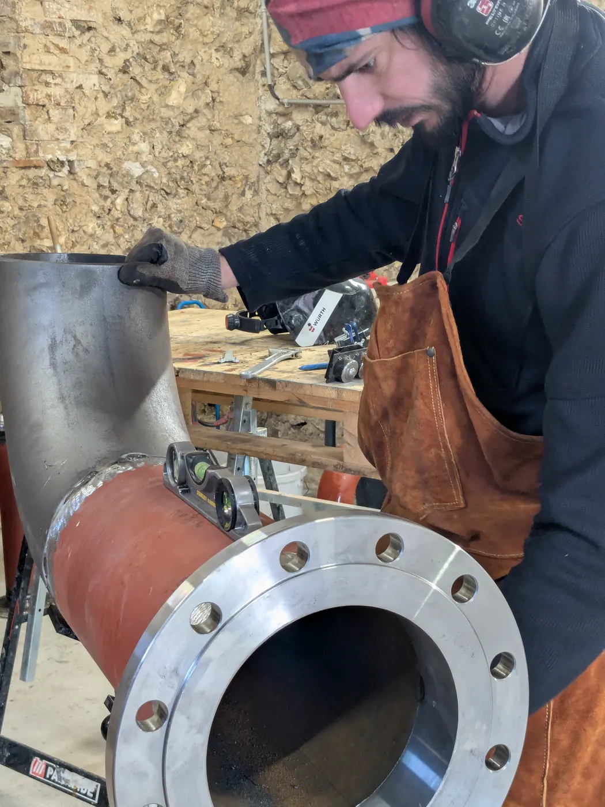
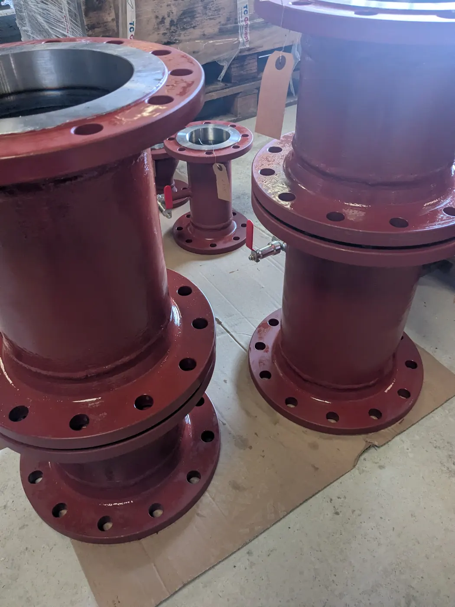
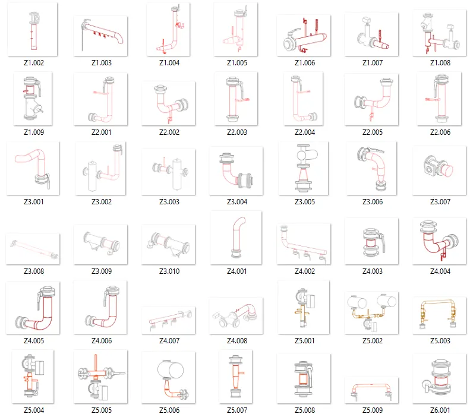

Sur un chantier CVC, le temps perdu ne se voit pas toujours tout de suite. Il s'accumule : une pièce mal ajustée, un support à refaire, une équipe qui attend un élément qui n'est pas encore prêt. Ce sont des heures qui ne sont jamais budgétées précisément, et qui pèsent pourtant lourd sur le planning et sur la facture finale.
La préfabrication en atelier ne supprime pas ce travail. Elle le déplace, et elle le rend prévisible.

Le problème du façonnage sur site
Fabriquer une pièce de tuyauterie ou un support directement sur chantier implique une succession d'étapes qui prennent du temps même quand tout se passe bien : mesurer, tracer, découper, ajuster, souder ou fixer, vérifier. Chaque étape est aussi soumise aux aléas du site, l'accès à la zone de travail, la disponibilité de l'outillage, la coordination avec les autres corps de métier présents en même temps.
Ce n'est pas une question de compétence. C'est une question d'environnement. Un atelier est organisé pour un seul objectif : produire vite et bien. Un chantier gère quinze objectifs en même temps.
Un exemple concret : le supportage
Sur une série récente de 150 pièces de supportage préfabriquées pour un client, chaque pièce a nécessité environ 5 minutes de fabrication en atelier, la découpe du rail, le montage du collier, l'assemblage sur le support.
Sur site, la même opération prend facilement 3 à 4 fois plus longtemps. Il faut ajouter le temps de traçage sur place, les allers-retours pour ajuster, et souvent une reprise si la première tentative ne convient pas parfaitement à la configuration réelle.
Sur 150 pièces, la différence n'est pas anecdotique. Elle se traduit en jours de main-d'œuvre qualifiée récupérés sur le planning, du temps que les équipes de pose peuvent consacrer à l'installation plutôt qu'à la fabrication.
Ce que ça change concrètement sur un chantier
1. Moins de personnel qualifié mobilisé sur des tâches répétitives
Un chaudronnier ou un plombier qualifié coûte cher à l'heure. Le faire fabriquer une pièce simple sur site, alors qu'elle pourrait être produite en série en atelier, c'est utiliser une compétence rare sur une tâche qui ne la nécessite pas vraiment.
2. Un planning plus prévisible
En atelier, la production suit un rythme maîtrisé. Sur site, chaque imprévu, accès bloqué, matériel manquant, coordination avec un autre corps de métier, retarde la suite. Réduire la part de fabrication sur site réduit d'autant l'exposition à ces aléas.
3. Moins de reprises
Une pièce préfabriquée passe par un contrôle qualité avant de quitter l'atelier. Une pièce façonnée sur site est souvent ajustée à l'œil, dans des conditions moins favorables, éclairage, accès, temps disponible. Le risque de non-conformité, et donc de reprise, est mécaniquement plus élevé.

Un cas réel : le CHU de Tours
Sur le chantier du CHU de Tours, réalisé pour EQUANS, la préfabrication d'une sous-station d'eau chaude a nécessité l'extraction de 59 pièces différentes depuis la maquette Revit du projet. Chacune a été isolée, mise en plan de fabrication, accompagnée de sa notice de montage, avant d'être préfabriquée et livrée prête à poser.
Pour l'équipe de pose, cela signifie 59 références identifiées et documentées, sans ambiguïté sur l'ordre de montage ni sur la configuration attendue. Le travail d'interprétation du plan, normalement fait sur site au moment de la pose, a été réalisé en amont, en atelier, avec le temps et les conditions nécessaires pour le faire correctement.

Où la préfabrication fait vraiment la différence
Tous les éléments d'un chantier ne se prêtent pas également à la préfabrication. Elle est particulièrement pertinente pour :
- Les séries de pièces identiques ou similaires (supportage, éléments répétitifs d'un réseau)
- Les sous-ensembles complexes qui demandent plusieurs soudures ou assemblages (sous-stations, collecteurs)
- Les projets où l'accès au site est contraint ou coûteux en temps (établissements en activité, sites occupés, zones difficiles d'accès)
Sur ces cas, le gain de temps sur site se traduit directement en gain financier : moins d'heures facturées sur place, moins de risque de dérapage de planning, moins de reprises.
Ce qu'il faut retenir
La préfabrication ne remplace pas le travail sur chantier. Elle le concentre sur ce qui doit vraiment s'y faire : l'installation, le raccordement, la mise en service. Le reste, la fabrication répétitive, l'ajustement précis, le contrôle qualité, se fait mieux, plus vite, et de façon plus prévisible en atelier.
Sur un projet avec plusieurs dizaines ou centaines de pièces à produire, cette différence d'organisation peut représenter des dizaines d'heures de main-d'œuvre qualifiée récupérées sur le planning du chantier.
JOFAGIST préfabrique des sous-stations et réseaux de tuyauterie CVC en atelier, depuis vos maquettes Revit jusqu'à la livraison prête à poser, partout en France et dans les DOM. Un projet à préfabriquer ? Contactez-nous.
Un projet de tuyauterie ou de sous-station CVC à préfabriquer ?
Devis gratuit sous 48h. Nous étudions vos plans et vous proposons une solution adaptée.